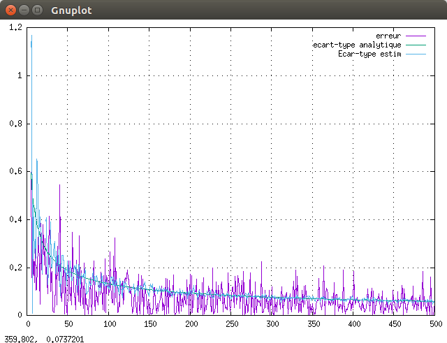
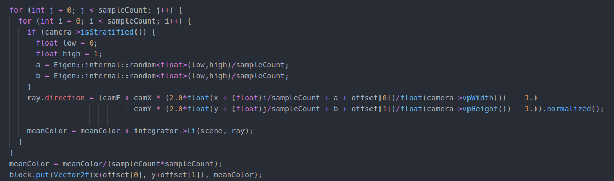
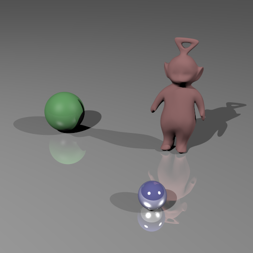
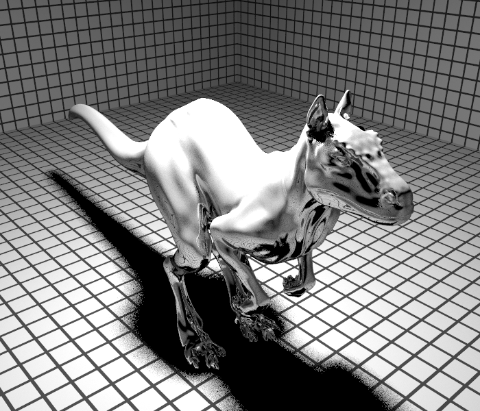
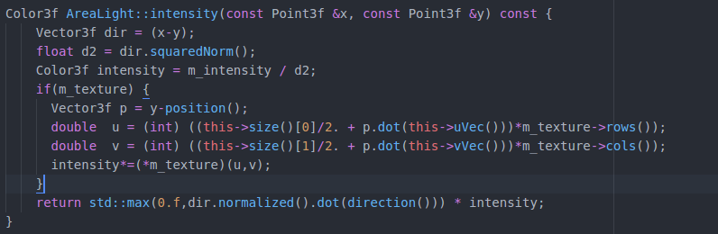
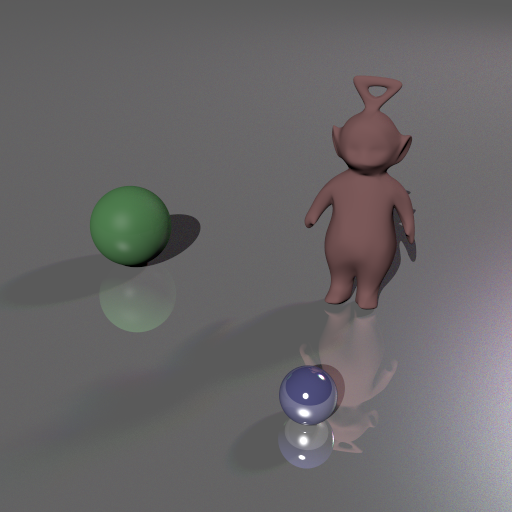
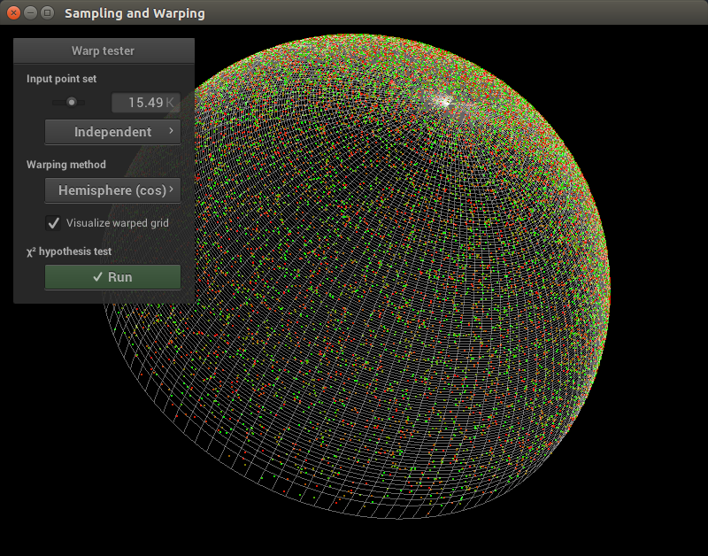
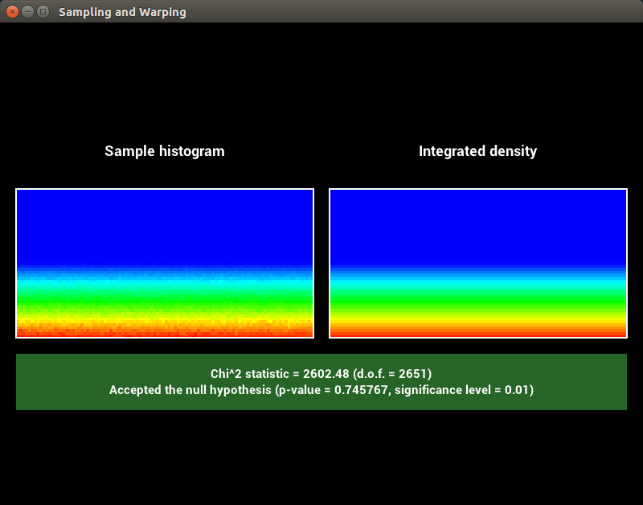
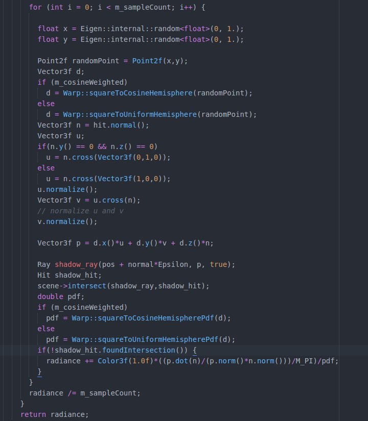
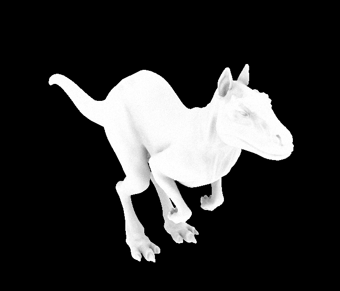

TD1 - Echantillonnage
Intégration de Monte-Carlo 1D
Le but de cette section était de comprendre à quoi servait l'intégrateur de Monte-Carlo. Cette méthode permet d'approximer la valeur d'une intégrale en prenant un certain nombre d'échantillons dans la population voulue et en en faisant la moyenne. Plus le nombre d'échantillons est élevée plus le résultat tend vers la valeur réelle de l'intégralle. On peut voir sur le graphique suivant que l'estimation est assez proche de la valeur attendue.
Anti-Aliasing
Dans cette partie, on se propose d'utiliser la technique de Monte-Carlo pour diminuer l'aliasing. Pour ce faire, au lieu de lancer un rayon par pixel, on va lancer plusieurs rayons, chacun dans une zone aléatoire du pixel et faire la moyenne de toutes les valeurs obtenues pour déterminer la couleur finale du pixel en question. Voici un extrait du code ainsi qu'une image de résultat. Le fait de rajouter de l'aléatoire est appelé la stratification et ajoute encore à la qualité du rendu.
8 rayons par pixel, non stratifié :

8 rayons par pixel, stratifié :
Sources étendues
Ici, il était question d'implémenter une area light. Jusqu'ici toutes les lumières n'étaient que des points dans l'espace. Une area light est représentée par une zone. Au lieu de lancer un rayon d'ombre sur un seul point, on le lance donc dans un endroit aléatoire de la surface de l'area light. On obtient ce genre de résultats avec une area light de taille 0.1,0.1 :
La partie suivante consistait à faire en sorte de pouvoir appliquer une texture sur l'area light. Le rayon d'ombre envoyé, si il atteignait la lumière, devait ensuite déterminer quelle partie de la texture il avait atteint afin de pouvoir donner une couleur adéquate au pixel dont il était originaire. Il fallait donc, avec ce rayon d'ombre, se placer dans le repère de l'area light pour trouver les coordonnées de la texture. Voici un extrait du code :
Voici un exemple de l'effet obtenu :
Je n'ai pas eu le temps de réaliser le bonus. Cependant, le principe est le même que pour la stratification de la partie précédente. On lancera plusieurs rayons d'ombre au lieu d'un, de façon aléatoire. Et on fera une moyenne des valeurs obtenues pour déterminer la couleur du pixel voulu.
Ambiante Occlusion
Dans la première section de cette partie, il était question de transformer un échantillonnage de carré en échantillonnage de disque, puis d'hémisphère. Il fallait également retourner la pdf de cet échantillonnage. Tous les échantillonnages ont été réalisés. Voici un exemple avec l'hémisphère pondérée par le cosinus :
 Dans la deuxième partie, il fallait implémenter l'intégrateur ao (ambiant occlusion). Pour chaque point, on va lancer un certain nombre de rayons d'ombres dans l'hémisphère centrée en ce point. On pourra ensuite faire la moyenne des valeurs obtenues pour déterminer la quantité de lumière incidente sur ce pixel. Voici le code permettant de réaliser cela :
En utilisant l'hémisphère uniforme :
En utilisant l'hémisphère pondérée par le cosinus :
Il semble que la technique pondérée par le cosinus donne des réultats plus lisses et de meilleure qualité.